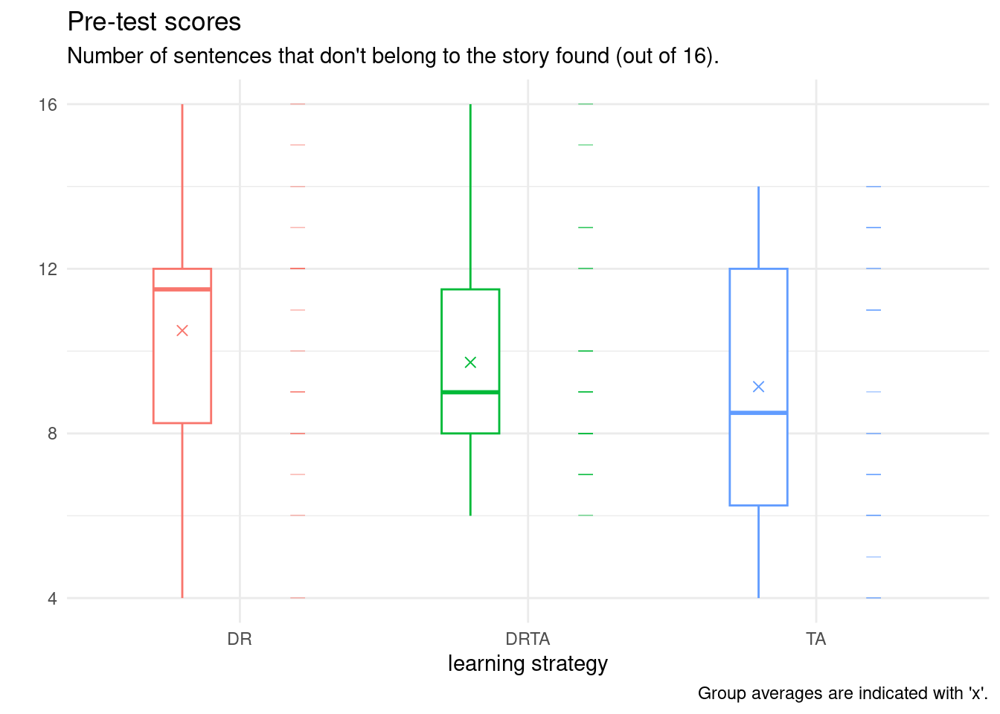

Code
data(databasename, package = 'hecedsm')The code created in the video can be downloaded here.
There’s a set of videos that walks through each section below. To make it easier for you to jump around the video examples, I cut the long video into smaller pieces and included them all in one YouTube playlist.
You can also watch the playlist (and skip around to different sections) here:
This notebook shows the various manipulation that an experimenter may undertake to test whether the population averages are the same based on some experimental data.
If you start your analysis in a new project, the default directory is where the project lies: getwd() will indicate where R expects to see files. You can load packages using library, provided they have been installed beforehand using install.packages(). A package is a collection of function and datasets that you can access for various tasks: you need only buy a reference textbook once (installing packages), whereas you can read of anything if you take the book off your bookshelf from there onwards (loading the package). For the most part, we will work with the tidyverse package, a simple wrapper that loads multiple libraries that adhere to common principles (tidy data analysis) and whose code more closely ressemble logical workflow and proper English instructions than base R. However, the function syntax is not set in stone and evolves over time.
You will sometimes encounter the double colon syntax package::function: normally, you can only access functions and objects from packages that are loaded, but to avoid disambiguation and clarity it is sometimes helpful to specify directly which package the function is from (especially if many packages have functions that go by the same name). When you load a package, it will hide existing functions in already loaded packages: thus, but if you only need to access/use a single function from a package, it may be simpler to refer to it directly.
The data used in the course has been preprocessed and cleaned and can be directly adressed by name using the command
where databasename is replaced by the name of one of the datasets.
In more general settings, however, the first task you need to undertake is to download and manipulate the data in a format that is amenable to conducing statistical analysis. This can take many forms: data sets can be found directly in R packages, downloaded directly given a web address (URL) or else downloaded into a data folder and loaded into the environment.
It is good practice not to manipulate the raw data using a spreadsheet software like Microsoft Excel, which is infamous for it’s awkward manipulation (the French version Office doesn’t recognize or save .csv files as being comma-separated values, strings are converted to dates and numerical values, oftentimes inconsistently, the number of columns is limited, etc. Rather, keep a copy of the raw data, a script in which you manipulate it and, if necessary, a clean and tidy copy in the database. This ensures that you do not mistakenly change records and can easily modify your data analysis if you realize that the data were incorrect at some stage due to manipulation or incorrect interpretation.
Depending on the format (particularly if you have SAS, SPSS or Stata formatted datasets, there may be hidden labels that contain information about the variables. The haven package, part of the tidyverse, imports the metadata alongside with the observations.
We consider data from Baumann et al. (1992). The abstract of the paper provides a brief description of the study
This study investigated the effectiveness of explicit instruction in think aloud as a means to promote elementary students’ comprehension monitoring abilities. Sixty-six fourth-grade students were randomly assigned to one of three experimental groups: (a) a Think-Aloud (TA) group, in which students were taught various comprehension monitoring strategies for reading stories (e.g., self-questioning, prediction, retelling, rereading) through the medium of thinking aloud; (b) a Directed reading-Thinking Activity (DRTA) group, in which students were taught a predict-verify strategy for reading and responding to stories; or (c) a Directed reading Activity (DRA) group, an instructed control, in which students engaged in a noninteractive, guided reading of stories.
We have multiple columns for each of the tests (pre-intervention and post-intervention) from Baumann et al. (1992). For the time being, we focus on the first, pretest, which was used to act as control and to ensure that the random allocation of students to the three treatment groups resulted in similar average performances. This allows allows us to perform paired comparisons at a later stage by subtracting post- and pre-intervention scores to check their progress.
The reader is invited at this stage to look at the description of the first task (Pretest 1) and the findings presented on p.148 of Baumann et al. (1992). We aim to reproduce their results here.
Rows: 66
Columns: 6
$ group <fct> DR, DR, DR, DR, DR, DR, DR, DR, DR, DR, DR, DR, DR, DR, DR, …
$ pretest1 <int> 4, 6, 9, 12, 16, 15, 14, 12, 12, 8, 13, 9, 12, 12, 12, 10, 8…
$ pretest2 <int> 3, 5, 4, 6, 5, 13, 8, 7, 3, 8, 7, 2, 5, 2, 2, 10, 5, 5, 3, 4…
$ posttest1 <int> 5, 9, 5, 8, 10, 9, 12, 5, 8, 7, 12, 4, 4, 8, 6, 9, 3, 5, 4, …
$ posttest2 <int> 4, 5, 3, 5, 9, 8, 5, 5, 7, 7, 4, 4, 6, 8, 4, 10, 3, 5, 5, 3,…
$ posttest3 <int> 41, 41, 43, 46, 46, 45, 45, 32, 33, 39, 42, 45, 39, 44, 36, …In R, categorical variables are stored as objects of type factor and numerical values as <dbl>, which stands for double.
We are now ready to proceed with the data analysis.
We have seen that although they may come from the same population, the sample estimates will never coincide with the population values exactly because of sampling variability. We compute summary statistics by treatment group: for this, we use the pipe, |>, which takes the object on the left and passes it on the right (this is the logical workflow), then group_by to split into separate groups and summarize to create a new tibble containing the descriptive statistics. The result is stored in summary_stats (note the assignment using the <- operator) on the first line.
We can print the table in Rmarkdown.
| group | mean | sd | n |
|---|---|---|---|
| DR | 10.5 | 3 | 22 |
| DRTA | 9.7 | 3 | 22 |
| TA | 9.1 | 3 | 22 |
Check that the summary statistics match the ones reported in the paper.
If you pay closer attention to the data and their description, you will note that the response variable, which represents the number of correctly identified text insertions (out of 16) is discrete and bounded above by 16 and below by zero. The averages (and maximum) are high. The article mentions that the second task posttest1 was made more difficult due to fear that student improvement would lead them to successfully detect most statements (with more people getting the maximum possible score, thus making comparisons of capabilities more difficult). One would need to rescale the scores if we wished to make meaningful comparisons between the two because the denominator differ.
Summary statistics are useful indicators, but they potentially hide aspects of the data. It is useful to plot the data (and sometimes include graphics in articles) to show the reader features or artefacts of the latter.
Our data here consists of a categorical variable, group, and a numerical variable, pretest1. There are multiple choices of graphics, including dot plots, box-and-whisker plots, or simply scatterplots, jittered to avoid overplotting. These can be combined using raincloud plots. Below, I show a boxplot, the data points and finally the sample average.
We explore below some potential choices and present a final product that is camery-ready for publication. I strongly advice that you produce graphics that are standalone: they should be interpretable once extracted from the paper with their caption.
set.seed(2021)
# because of jittering below, the position changes
# every time you generate the figure
# the above ensures that the pseudo-random numbers
# are the same (useful for papers!)
ggplot(data = BSJ92,
#aesthetics: which variables to map where
aes(x = group,
y = pretest1,
col = group)) +
geom_boxplot(
width = 0.2, # change width
position = position_nudge(x = -0.2, y = 0)) +
# offset to the left
# add rugs for observations
# move to right of boxplot
geom_point(shape = 95, # a horizontal bar
size = 4, # size of bar
alpha = 0.5, # transparency 1=opaque, 0=transparent
position = position_nudge(x = 0.2, y = 0)) +
# add averages
geom_point(data = summary_stats,
aes(y = mean),
shape = 4, # 4 is cross (x)
size = 2,# double size of point
position = position_nudge(x = -0.2, y = 0)) +
# add meaningful labels
labs(x = "learning strategy",
y = "", # put in subtitle (no head tilting)
title = "Pre-test scores",
subtitle = "Number of sentences that don't belong to the story found (out of 16).",
caption = "Group averages are indicated with 'x'.") +
theme_minimal() + # change theme (color of background, etc.)
theme(legend.position = "none") #remove legend
---
title: Introduction
type: docs
editor_options:
chunk_output_type: console
---
```{r slides-videos, echo=FALSE, include=FALSE}
source(here::here("R", "youtube-playlist.R"))
playlist_id <- "PLUB8VZzxA8ItkTK2mUO0VDQkPhqsyNw45"
slide_details <- tibble::tribble(
~title, ~youtube_id,
"RStudio interface", "utGd_kt0pdw",
"Loading data", "mMcSFqGal0w",
"Cleaning and transforming data", "1YYlLZ90Vas",
"Summary statistics", "PvHFsiuase0",
"Creating graphics", "lNUC5_Tws9M",
)
```
# Videos
The code created in the video [can be downloaded here](/example/onewayanova-video.R).
```{r show-youtube-list, echo=FALSE, results="asis"}
youtube_list(slide_details, playlist_id, example = TRUE)
```
# Notebook
This notebook shows the various manipulation that an experimenter may undertake to test whether the population averages are the same based on some experimental data.
```{r setup, eval = TRUE, echo = FALSE}
library(knitr)
options(knitr.kable.NA = '')
options(tidyverse.quiet = TRUE)
```
## Working directory and packages
If you start your analysis in a new project, the default directory is where the project lies: `getwd()` will indicate where **R** expects to see files. You can load packages using `library`, provided they have been installed beforehand using `install.packages()`. A package is a collection of function and datasets that you can access for various tasks: you need only buy a reference textbook once (installing packages), whereas you can read of anything if you take the book off your bookshelf from there onwards (loading the package). For the most part, we will work with the `tidyverse` package, a simple wrapper that loads multiple libraries that adhere to common principles (tidy data analysis) and whose code more closely ressemble logical workflow and proper English instructions than base **R**. However, the function syntax is not set in stone and evolves over time.
You will sometimes encounter the double colon syntax `package::function`: normally, you can only access functions and objects from packages that are loaded, but to avoid disambiguation and clarity it is sometimes helpful to specify directly which package the function is from (especially if many packages have functions that go by the same name). When you load a package, it will hide existing functions in already loaded packages: thus, but if you only need to access/use a single function from a package, it may be simpler to refer to it directly.
## Importing data
The data used in the course has been preprocessed and cleaned and can be directly adressed by name using the command
```{r}
#| eval: false
#| echo: true
data(databasename, package = 'hecedsm')
```
where `databasename` is replaced by [the name of one of the datasets](https://lbelzile.github.io/hecedsm/reference/index.html).
In more general settings, however, the first task you need to undertake is to download and manipulate the data in a format that is amenable to conducing statistical analysis. This can take many forms: data sets can be found directly in **R** packages, downloaded directly given a web address (URL) or else downloaded into a data folder and loaded into the environment.
It is good practice **not** to manipulate the raw data using a spreadsheet software like Microsoft Excel, which is infamous for it's awkward manipulation (the French version Office doesn't recognize or save `.csv` files as being comma-separated values, [strings are converted to dates and numerical values ](https://genomebiology.biomedcentral.com/articles/10.1186/s13059-016-1044-7), [oftentimes inconsistently](https://rohanalexander.com/posts/2020-04-14-tidying-the-2019-kenyan-census/), [the number of columns is limited](https://theconversation.com/why-you-should-never-use-microsoft-excel-to-count-coronavirus-cases-147681), etc. Rather, keep a copy of the raw data, a script in which you manipulate it and, if necessary, a clean and tidy copy in the database. This ensures that you do not mistakenly change records and can easily modify your data analysis if you realize that the data were incorrect at some stage due to manipulation or incorrect interpretation.
Depending on the format (particularly if you have SAS, SPSS or Stata formatted datasets, there may be hidden labels that contain information about the variables. The `haven` package, part of the tidyverse, imports the metadata alongside with the observations.
## Study
We consider data from @Baumann:1992. The abstract of the paper provides a brief description of the study
> This study investigated the effectiveness of explicit instruction in think aloud as a means to promote elementary students' comprehension monitoring abilities. Sixty-six fourth-grade students were randomly assigned to one of three experimental groups: (a) a Think-Aloud (TA) group, in which students were taught various comprehension monitoring strategies for reading stories (e.g., self-questioning, prediction, retelling, rereading) through the medium of thinking aloud; (b) a Directed reading-Thinking Activity (DRTA) group, in which students were taught a predict-verify strategy for reading and responding to stories; or (c) a Directed reading Activity (DRA) group, an instructed control, in which students engaged in a noninteractive, guided reading of stories.
We have multiple columns for each of the tests (pre-intervention and post-intervention) from @Baumann:1992. For the time being, we focus on the first, `pretest`, which was used to act as control and to ensure that the random allocation of students to the three treatment groups resulted in similar average performances. This allows allows us to perform paired comparisons at a later stage by subtracting post- and pre-intervention scores to check their progress.
The reader is invited at this stage to look at the description of the first task (*Pretest 1*) and the findings presented on p.148 of @Baumann:1992. We aim to reproduce their results here.
```{r loaddata, echo = TRUE, eval = TRUE}
# Load packages
library(tidyverse)
# Load data from the package
data(BSJ92, package = 'hecedsm')
# Look at data to check variable type
glimpse(BSJ92)
```
In **R**, [categorical variables](https://lbelzile.github.io/math80667a/01-introduction.html#review-of-basic-concepts) are stored as objects of type `factor` and numerical values as `<dbl>`, which stands for double.
We are now ready to proceed with the data analysis.
## Summary statistics
We have seen that although they may come from the same population, the sample estimates will never coincide with the population values exactly because of sampling variability. We compute summary statistics by treatment group: for this, we use the pipe, `|>`, which takes the object on the left and passes it on the right (this is the logical workflow), then `group_by` to split into separate groups and `summarize` to create a new `tibble` containing the descriptive statistics. The result is stored in `summary_stats` (note the assignment using the `<-` operator) on the first line.
```{r summary-stats, echo = TRUE, eval = TRUE}
summary_stats <- BSJ92 |>
group_by(group) |>
summarize(mean = mean(pretest1),
sd = sd(pretest1), # "sd = standard deviation, i.e., sqrt(variance)"
n = n())
```
We can print the table in Rmarkdown.
```{r print-summary-stat, echo = FALSE, results = 'asis'}
knitr::kable(summary_stats,
digits = c(1,1,0),
caption = "Summary statistics of pretest 1.") |>
kableExtra::kable_styling(position = "center")
```
Check that the summary statistics match the ones reported in the paper.
If you pay closer attention to the data and their description, you will note that the response variable, which represents the number of correctly identified text insertions (out of 16) is discrete and bounded above by 16 and below by zero. The averages (and maximum) are high. The article mentions that the second task `posttest1` was made more difficult due to fear that student improvement would lead them to successfully detect most statements (with more people getting the maximum possible score, thus making comparisons of capabilities more difficult). One would need to rescale the scores if we wished to make meaningful comparisons between the two because the denominator differ.
## Graphics
Summary statistics are useful indicators, but they potentially hide aspects of the data. It is useful to plot the data (and sometimes include graphics in articles) to show the reader features or artefacts of the latter.
Our data here consists of a categorical variable, `group`, and a numerical variable, `pretest1`. There are multiple choices of graphics, including dot plots, box-and-whisker plots, or simply scatterplots, jittered to avoid overplotting. These can be combined using raincloud plots. Below, I show a boxplot, the data points and finally the sample average.
We explore below some potential choices and present a final product that is camery-ready for publication. I strongly advice that you produce graphics that are standalone: they should be interpretable once extracted from the paper with their caption.
```{r graphics, echo = TRUE, eval = TRUE, fig.cap = "Results of pretest 1 based on treatment allocation."}
set.seed(2021)
# because of jittering below, the position changes
# every time you generate the figure
# the above ensures that the pseudo-random numbers
# are the same (useful for papers!)
ggplot(data = BSJ92,
#aesthetics: which variables to map where
aes(x = group,
y = pretest1,
col = group)) +
geom_boxplot(
width = 0.2, # change width
position = position_nudge(x = -0.2, y = 0)) +
# offset to the left
# add rugs for observations
# move to right of boxplot
geom_point(shape = 95, # a horizontal bar
size = 4, # size of bar
alpha = 0.5, # transparency 1=opaque, 0=transparent
position = position_nudge(x = 0.2, y = 0)) +
# add averages
geom_point(data = summary_stats,
aes(y = mean),
shape = 4, # 4 is cross (x)
size = 2,# double size of point
position = position_nudge(x = -0.2, y = 0)) +
# add meaningful labels
labs(x = "learning strategy",
y = "", # put in subtitle (no head tilting)
title = "Pre-test scores",
subtitle = "Number of sentences that don't belong to the story found (out of 16).",
caption = "Group averages are indicated with 'x'.") +
theme_minimal() + # change theme (color of background, etc.)
theme(legend.position = "none") #remove legend
```
## References